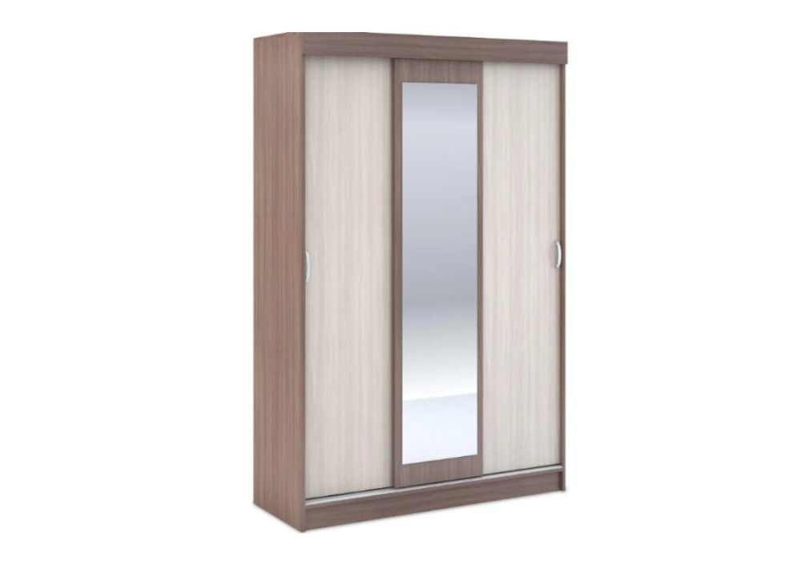

Столплит Мебель
| Регистрация |
|
|
Столплит Мебель |
|
| Главная | Каталог | Контакты |
|
Главная Каталог Диваны Шкафы Кровати Столы Контакты |
Шкаф-купе "Бася" (3-х дверный) Описание товараВместительный и функциональный шкаф-купе "Бася" с центральной зеркальной дверью. Отличное и недорогое решение для организации хранения вещей в спальне, гостиной или прихожей. Характеристики товара
Подробное описание товараШкаф-купе "Бася" является одной из самых популярных моделей благодаря своей практичности, современному внешнему виду и доступной цене. Раздвижные двери экономят пространство в комнате. Центральная дверь оснащена большим зеркалом в полный рост, которое не только удобно для использования, но и визуально расширяет помещение. Преимущества модели:
Материалы и уходКорпус и фасады шкафа изготовлены из качественной ламинированной древесно-стружечной плиты (ЛДСП) толщиной 16 мм, соответствующей стандартам безопасности. Торцы деталей обработаны прочной кромкой ПВХ для защиты от влаги и механических повреждений. Для ухода за поверхностями рекомендуется использовать мягкую влажную ткань и неабразивные чистящие средства. |


|
| © 2025 Столплит. Все права защищены. | ||